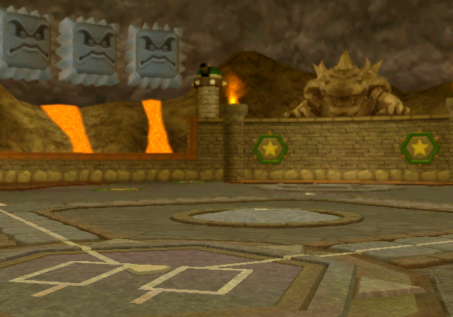
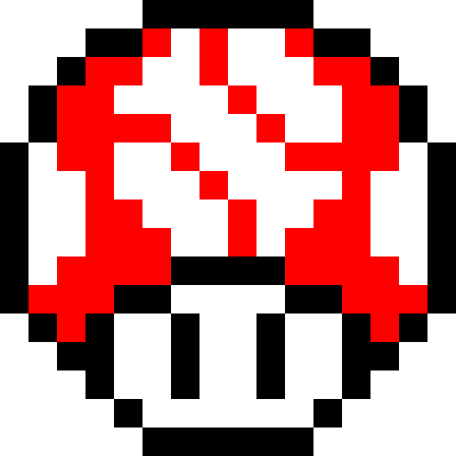

Each park has its own light, materials, and sense of place. These studies bring those qualities into v3’s dark surfaces, warm lettering, and quiet selection frames. Placement on the website is still open.

Smoke, stone, and a little heat.

CONTROL SPECIMEN01Environment-led: the park is recognizable, with dark chrome holding the text.
The environment is the game’s stadium preview, entry 1746:070. Materials are from Bowser’s actual castle bank, entry 11, textures 31 and 9.
These are local design studies using recovered game artwork. The colors assigned to interface roles, cropping, dimming, and control arrangement are new design choices—not reconstructions of an original game screen. Toy Field uses its starfield and blue panel textures because no equivalent stadium-preview image was found. The 3D visualizer and its theme values are unchanged.